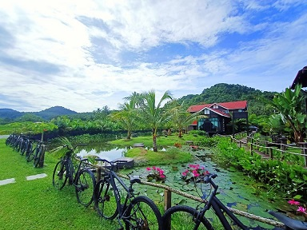
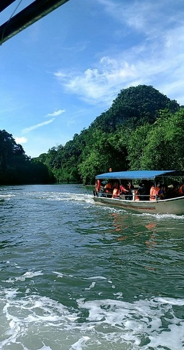

On 28-30 October 2020, my family and I went to Pulau Langkawi for a family vacation. We went to Pulau Langkawi by ride a ferry from Ferry Kuala Kedah. We arrived at Pulau Langkawi at 10.30 am in the morning, since we take the first trip of ferry on that day. After arrived there, we decided to take a breakfast at a restaurant. Then, we decided to continue our day with going to the one of the major attraction of Langkawi, which is Langkawi Cable Car, which is located at Jalan Telaga Tujuh, 07000, Langkawi, Kedah. Unfortunately, my family and I did not get the chance to explore each of the stations that they owned, since there is a lot of people there and we want to avoid the congestion. We decide to just take some photos at the base station of the cable car as a memories.
After finished taking photos, we went to our accodomation that we have booked before went to Pulau Langkawi, which is Villa Sawah Langkawi. All of us agree that we want to spend our night at that villa because we want to celebrate my brother and I birthday. I was so excited since I can celebrate my birthday with my family members. My family suprised us with a lot of foods such as cake, grilled chicken, grilled lamb and etc.
On the next day, we went to Kilim Mangrove Tour that located at Kilim River Tourism Jetty, Mukim Kampung Kilim, 07000 Langkawi, Kedah. For this trip, I am so excited because this trip packages includes with visiting fishing fish farm, eagle watching, bats cave and also crocodile cave. This is my first time experience riding a boat and visiting all the places that mentioned before. In the evening, we went to Pantai Chenang for taking some photos there and swim at the beach.
